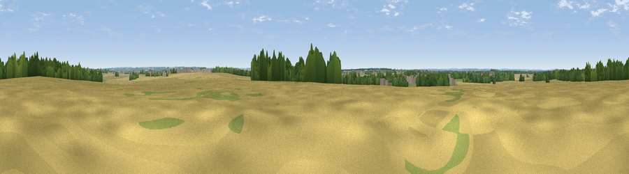

Viewpoint near Witham St Hughs
#33836 in England · top 50% of its area beats it · near Witham St HughsWhere it is
The exact computed spot (SK 88899 64126). Click the marker for map links.
The view, rendered

A 360° render of this exact spot computed from the terrain model, tree cover and land cover — summer colours, afternoon light, calibrated against photographs of famous viewpoints. Real trees, hedges and buildings will differ in detail.
The panorama
Grey silhouette: terrain skyline in each direction (720 bearings, Earth curvature and refraction included). Dashed green: skyline with trees (+15 m) and buildings (+8 m) as obstacles. Blue strip: how far the ground is visible on each bearing.
Where the view opens
Wedge length = distance to the farthest visible ground on that bearing (vegetation-aware). Rings at 10, 25 and 50 km.
What fills the view
62% cropland · 19% grassland · 15% woodland · 4% built-up
Angular shares of the visible panorama (visual magnitude), not map area. Landscape diversity 0.46 (0–1 Shannon).
Key numbers
More beautiful places nearby
The staircase of upgrades: each row has a higher view potential than everything closer. Driving times are estimates from straight-line distance, calibrated against real road routing — check an actual route before setting out.
| Place | Direction | Drive | Score |
|---|---|---|---|
| Slacks Hill | NW · 3 km | ~8 min | 45.8 |
| Viewpoint near Harmston | E · 9 km | ~17 min | 47.0 |
| Viewpoint near Bracebridge | ENE · 10 km | ~19 min | 51.8 |
| Viewpoint near Lincoln | NE · 11 km | ~21 min | 54.0 |
| Lincoln Castle | NE · 11 km | ~22 min | 54.5 |
| Viewpoint near Burton-by-Lincoln | NNE · 13 km | ~25 min | 54.9 |
| Willoughby Hill | WNW · 20 km | ~33 min | 59.0 |
| Viewpoint near Great Gonerby | S · 25 km | ~40 min | 62.0 |
53.16684, -0.67167 · source: osm peak · position refined by local search. Computed location — check access rights before visiting.